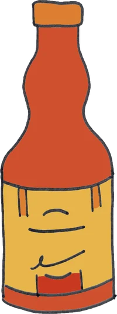
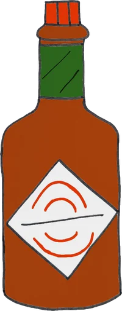
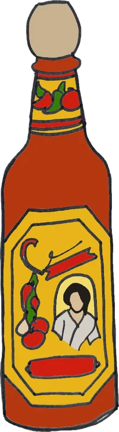
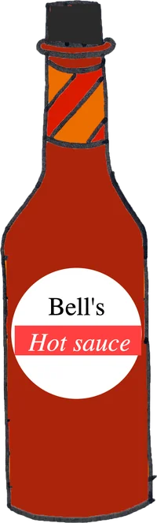

Post
Hot sauce power rankings
Inspired by the LA Times food power rankings

The spice is nice
These hot sauce power rankings were inspired by the LA Times food power rankings. Notable examples from the LA Times include power rankings for Girl Scout cookies (opens in new tab), frozen pizza (opens in new tab), and French fries (opens in new tab).
Scoville heat units
The Scoville scale measures how much capsaicin, the compound that makes chiles hot, is in a pepper or a sauce. Few bottles are ever lab-tested, so the ratings below are the makers’ claims or published estimates. Treat them as a rough guide: how hot a sauce feels also depends on what else is in it.
Frank’s RedHot Original – 450 SHU

Frank’s RedHot is a cayenne pepper sauce first bottled in New Iberia, Louisiana, in 1920. It is often credited as the hot sauce in the first Buffalo wings, served at the Anchor Bar in Buffalo, New York, in 1964, although that story is disputed.At about 450 SHU it is barely hot at all, which makes it a useful baseline for everything that follows. The flavor is mostly aged cayenne and vinegar, and you will find it on supermarket shelves and chain-restaurant tables almost everywhere.
Tabasco Original Red – 2,500 SHU

Tabasco has three ingredients: distilled vinegar, red pepper and salt. The peppers are mashed with salt and aged in oak barrels before the vinegar goes in, which gives it a sharp, sour bite. A few dashes are enough to wake up eggs, pizza or a sandwich.Its maker puts the heat at 2,500 to 5,000 SHU, depending on the batch. That is noticeably hotter than Frank’s, but still mild.
Cholula Original – 3,600 SHU

Cholula is made in Jalisco, Mexico, from árbol and piquín peppers. It is earthier and less sour than Tabasco, cheap, and easy to find, which is why it sits near the top of the versatility chart above.PepperGeek estimates its heat at about 3,600 SHU. That is about as hot as the sauces on restaurant tables get. Everything below is a big step up.
Bell’s Sizzling Hot Sauce – 45,000 SHU

Shout out to Bell’s hot sauce: the spice is nice! Bell’s is lovingly brewed in small batches in a small factory in Queens, NY. With fresh habanero and ghost peppers, Bell’s is the hot sauce I reach for most often.Dawson’s Original – 82,000 SHU
Dawson’s, a sauce maker that has appeared on Hot Ones, leads its Original sauce with fresh habanero peppers, which are many times hotter than the cayenne in Frank’s, so it jumps a long way up the scale. Expect to pay more than you would for a supermarket sauce.
Da Bomb Beyond Insanity – 135,600 SHU
Da Bomb is best known as the sauce that makes Hot Ones guests suffer, and it has been a regular in the show’s lineup for years. Its heat comes partly from habaneros and partly from “natural pepper flavoring”, a polite name for pepper extract, which many people find harsh and bitter.
On paper it is only 135,600 SHU, a fraction of the sauces after it, yet many tasters say it feels far hotter. A Scoville number does not capture everything about how a sauce burns.
Dingo Widow Maker – 682,000 SHU
Widow Maker, from Dingo Sauce Co. in Western Australia, was the ninth wing in season 11 of Hot Ones in 2020. It is made with six superhot chiles, including the Carolina Reaper and the ghost pepper.
At 682,000 SHU it is one of the hottest sauces here that gets its heat from peppers alone, without extract. That is rare at this level.
Satan’s Blood – 800,000 SHU
Satan’s Blood, from Sauce Crafters, barely counts as a sauce. It is mostly chile extract and vinegar, made to add heat rather than flavor, and it is sold for use as a food additive, a drop at a time. Its rating is only a little above Widow Maker’s, but a concentrated extract hits much harder than a sauce made from whole peppers.
Dragon in the Clouds – about 1,000,000 SHU
Hot Ones made Dragon in the Clouds with the music label 88rising in 2019. Its ingredients nod to the label’s artists: yuzu for Japan, sambal for Indonesia and Sichuan peppercorns for China. There is no official heat rating. PepperGeek found it bitter and hard to pair with food, and puts it at around 1 million SHU.
Mad Dog 357 Gold Edition – 1,000,000 SHU
Mad Dog 357 comes from the Ashley Food Company in Massachusetts, which David Ashley started in his home kitchen in 1991 (opens in new tab). The name is a nod to the .357 Magnum revolver. The Gold Edition is rated at 1,000,000 SHU, hot enough that one bottle will last a very long time. Mad Dog also makes much milder sauces (opens in new tab).
The Last Dab XXX – 2,000,000+ SHU
The Last Dab is the sauce that ends most Hot Ones interviews. The XXX version, made with Smokin’ Ed Currie of the PuckerButt Pepper Company, uses three kinds of Pepper X along with ginger, turmeric, coriander, cumin and mustard, so it tastes of warm spices as well as heat. Unlike most sauces this hot, it is made to be eaten, not just survived.
It is rated at more than 2,000,000 SHU. Currie also bred the Carolina Reaper, which held the record for the world’s hottest chile until October 2023, when Guinness World Records gave the title to Pepper X, at an average of 2,693,000 SHU (opens in new tab).
Mad Dog 357 Plutonium No. 9 – 9,000,000 SHU
Plutonium No. 9 is not a hot sauce at all but a pure pepper extract, rated at 9,000,000 SHU, and Mad Dog calls it the ceiling of its lineup. At that strength it is an ingredient, not a condiment, and it comes covered in warnings.